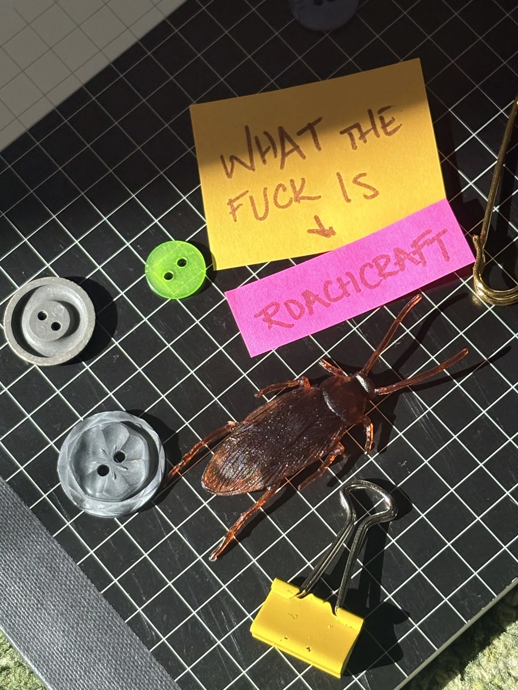
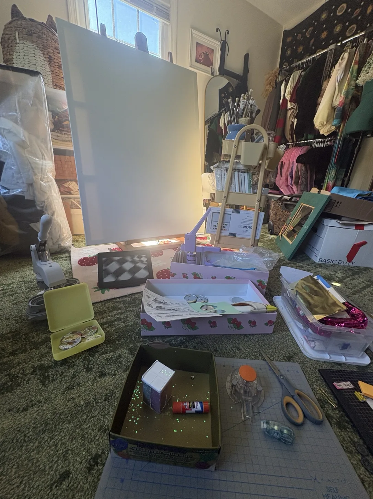
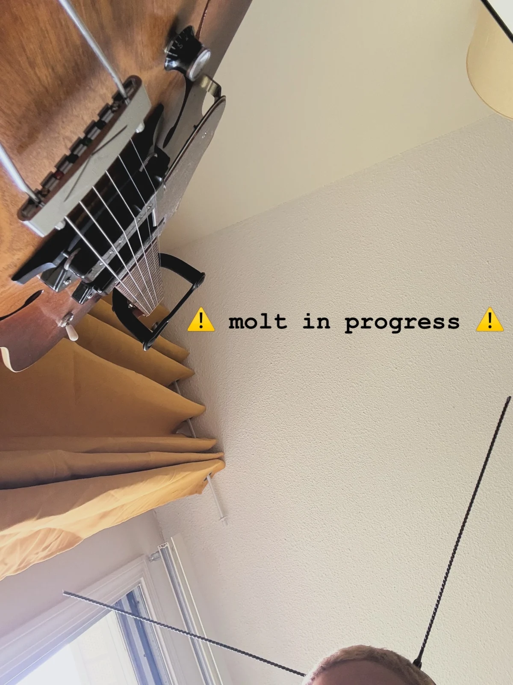
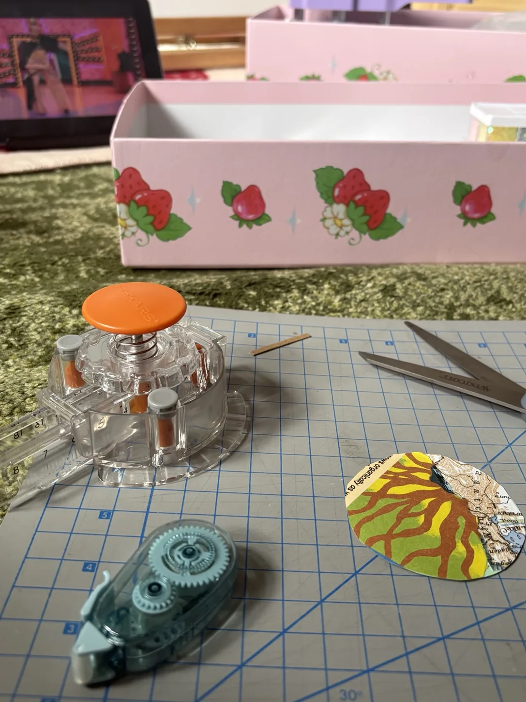
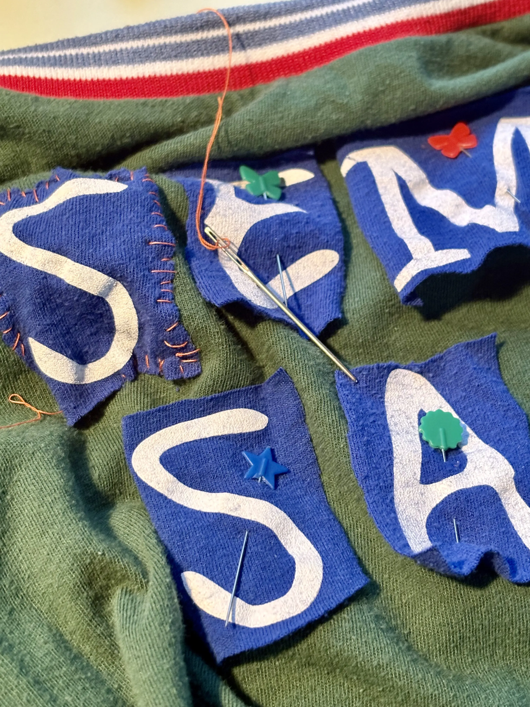
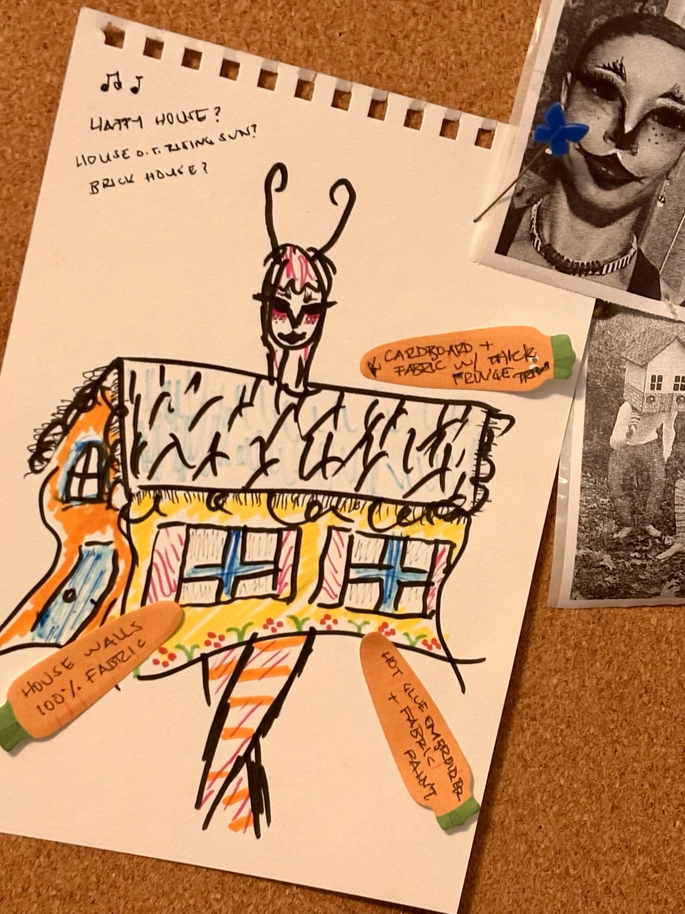

an ongoing experiment in making things without demanding a reason for every little impulse.
some things are worth doing simply because they might become interesting.
flip over ↗

desk 01 / pending thoughts
words, processes, & other evidence of activity.
please excuse the state of the desk.
an ongoing experiment in making things without demanding a reason for every little impulse.
some things are worth doing simply because they might become interesting.

some things in various states of becoming other things.

found some discarded carbon & decided i deserved new feelers.
results: considerably more aerodynamic in spirit.

an arrangement of possibilities.

letters looking for somewhere else to be.

a proposed drag look involving one cockroach, one house, and several questionable structural decisions.
possible materials: cardboard, fabric, hot glue, and optimism.

oh. that's where that went.